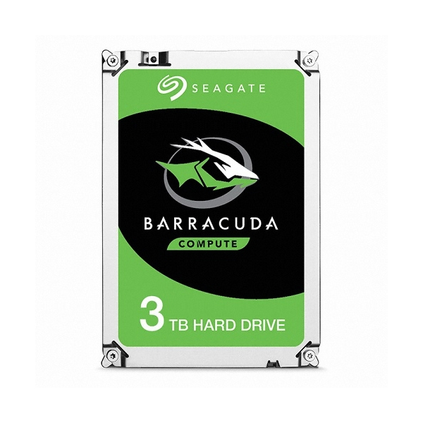

1.CPU
모델명: 인텔 코어i9-9세대 9900K (커피레이크-R)
사진:
기능: CPU는 ‘Central Processing Unit’의 약자로서, 직역하면 중앙처리장치(中央處理裝置)다. 단어 그대로, 컴퓨터의 정중앙에서 모든 데이터를 처리하는 장치라는 뜻 입니다. CPU는 컴퓨터의 두뇌에 해당하는 것으로서, 사용자로부터 입력 받은 명령어를 해석, 연산한 후 그 결과를 출력하는 역할을 합니다
출처: [네이버 지식백과]
가격: 652,000
선정이유: 고성능을 필요로 하는 작업에서 빠르게 연산할 수 있기 때문에 게이밍용으로 적합하다고 생각하여 선정하였습니다.
2.메인보드
모델명: MSI B360M 박격포
사진:
기능: 컴퓨터 내에서 기본회로와 부품들을 담고 있는 가장 기본적이고 물리적인 하드웨어로서, 마더보드(mother board) 또는 주기판이라고도 한다. PC의 실행 환경을 설정하고 그 정보를 유지해 주며, PC가 안정적으로 구동되게 해주고, PC의 모든 장치들의 데이터 입출력 교환을 원활하게 해줍니다.
출처: [네이버 지식백과]
가격: 107,750
선정이유: 메모리 슬롯을 4개를 지원하여 64G까지 확장이 가능해서 게임뿐만이 아니라 다른 사무용이나 사진이나 동영상 저장에도 도움이 될 것이라고 생각해서 선택하였습니다.
3.메모리
모델명: 삼성전자 DDR4 16G PC4-21300
사진:
기능: 컴퓨터에 사용되는 장치 중에서 저장기능을 가지고 있는 것들을 메모리라고 합니다.
출처: [네이버 지식백과]
가격: 100,540
선정이유: 제가 컴퓨터로 여러 가지 일을 많이 하기 때문에 좋은 메모리가 필요하다고 생각해서 선정하였습니다.
4.그래픽 카드
모델명: 이엠텍 지포스 RTX 2070 STORM X Dual D6 8GB
사진:
기능: 모니터는 컴퓨터 안에 있는 그래픽 카드를 통하여 화면에 정보를 싣는다. 그래픽카드에서 만들어진 신호가 모니터에서 빛으로 변환되어 인간의 눈으로 이해할 수 있게 해준다.
출처: [네이버 지식백과]
가격: 631,600
선정이유: 성능이 좋고, AS면에서 편리하고 사진을 제가 많이 찍고 좋아하는 만큼 해상도가 매우 중요하다고 생각하여 선정하였습니다.
5.SSD
모델명: 마이크론 Crucial MX500 대원CTS (250GB)
사진:
기능: 반도체를 이용하여 정보를 저장하는 장치이다. 솔리드 스테이트 드라이브(Solid State Drive)의 영문 머리글자를 딴 약자이다. 하드 디스크 드라이브(HDD)와 비슷하게 동작하면서도 기계적 장치인 HDD와는 달리 반도체를 이용하여 정보를 저장합니다.
출처: [네이버 지식백과]
가격: 50,440
선정이유: 부팅시 C드라이버로 사용할것이며, 이에 따른 부팅 속도가 빠르기 때문에 선정하였습니다.
6. 케이스
모델명: ABKO SUITMASTER 361G 칼리스토 강화유리 DOUBLING
사진:
기능: 컴퓨터 케이스(computer case)는 컴퓨터의 주요 부품들을 둘러싸는 부분이며, 안의 부품들을 보호해줍니다.
출처: [위키백과]
가격: 68,000
선정이유: 쿨링팬이 4개라 과열이 적을 것 같았고, 측면이 강화유리로 되어있기 때문에 튼튼할 것 같아서 선정하였습니다.
7.운영체제
모델명: 마이크로소프트 윈도우 10 HOME 처음사용자용 한글
사진:
기능: 운영체제는 하드웨어를 제어하고 컴퓨터 자원을 관리하며, 컴퓨터 사용을 편리하게 해주고 응용 프로그램들의 수행을 도와줍니다.
출처: [네이버 지식백과]
가격: 181,390
선정이유: 기존에 윈도우를 계속 사용하여 왔으며, 각종 프로그램 호환성이 윈도우가 뛰어나기 때문에 윈도우 10을 선택하였습니다.
8.파워
모델명: 마이크로닉스 Classic II 500W +12V Single Rail 85+
사진:
기능: 원격 정보 처리 서비스의 일종인데, 컴퓨터의 하드웨어와 전력만을 제공합니다.
출처: [네이버 지식백과]
가격: 43,000
선정이유: 전원이 500W면 충분하다고 생각했고,
집에 있는 데스크톱의 파워가 고장이 한 번씩 나서 as기간이 매우 중요하다고 생각하였습니다. 이 제품은 as기간이 6년으로 길었고, 보호 기능이 좋아서 선택하였습니다.
9.하드디스크
모델명:Seagate 2TB BarraCuda ST2000DM008 (SATA3/7200/256M)
사진:
기능: 하드 디스크는 '하드 디스크 드라이브'의 줄임말 입니다. 'HDD'라고 부르기도 한다. 하드 디스크는 컴퓨터 본체를 구성하는 부품 중 하나로서 필요한 자료를 저장하는, 저장 공간으로서의 역할을 합니다.
출처: [네이버 지식백과]
가격: 72,500
선정이유: 속도가 빠르고 사진을 좋아해서 많이 찍고 저장하는데 그러려면 좋은 하드디스크가 필요하다고 생각해서 선정하였습니다.
10.ODD
모델명: Lite-On USB 외장형 DVD-RW ES-1
사진:
기능: 데이터를 읽고 저장하는 주변기기로 CD드라이브, DVD드라이브가 대표적입니다. 일반적으로 외장형과 내장형으로 구분되며 CD드라이브는 CD-ROM과 CD-RW로 나누어지며 CD-ROM은 읽는 기능, CD-RW는 CD를 기록하는 기능과 읽는 기능이 있습니다.
출처: [네이버 지식백과]
가격: 33,990
선정이유: 가볍고 디자인이 예뻐서 선정하였다.
11.키보드
모델명: 제닉스 STORMX ZERO
사진:
기능: 컴퓨터 키보드는 타자기의 자판과 비슷한 모양새를 띤 PC의 입력장치 중 하나다. 주로 이메일이나 워드 프로세서 등에서 숫자 및 문자를 입력할 때 많이 쓰이며, 게임이나 각종 애플리케이션에서도 유용한 단축키와 특수 명령 기능을 제공한다.
출처: [네이버 지식백과]
가격: 39,890
선정이유: 키보드의 디자인이 이뻐서 선택하였다.
12.마우스
모델명: MAXTILL TRON G10PRO reborn 3330 RGB 게이밍마우스 (무광 UV코팅)
사진
기능: 마우스는 컴퓨터 입력장치의 일종입니다.
출처: [네이버 지식백과]
가격: 22,790
선정이유: 마우스의 디자인이 예쁘고 자주 가는 피시방에서 쓰는 마우스인데, 잡기가 편해서 선정하였다.
13.모니터
모델명: 제이씨현 UDEA EDGE 24 커브드 144 게이밍 AE 화이트 무결점
사진
기능: 컴퓨터에서 처리한 결과를 보여주는 출력 장치. 모니터는 시스템에 내린 명령을 처리하는 과정이나 결과를 볼 수 있게 해 준다.
출처: [네이버 지식백과]
가격: 169,000
선정이유: 제 데스크톱의 목적은 게이밍용도 포함이기 때문에 모니터의 화질이 좋고 화면이 크고 커브가 있는 것으로 선정하였습니다.
14.스피커
모델명: 브리츠 액세서리즈 BA-R9 SoundBar
사진:
기능: 전기신호를 진동판의 진동으로 바꾸어 공기에 소밀파ㅡㄹ 발생기켜 음파를 복사한다.
출처: [네이버 지식백과]
가격: 14,980
선정이유: 집에 똑같은 스피커가 있는데 음질이 좋아서 선택하였습니다.
호환성 체크
추천 사이트
여러 가지 부품들을 찾아보고 가격을 비교해보기 편리하여서 좋았다.
컴퓨터에 필요한 다양한 부품들이 있었고, 호환성 검사를 할 수 있어서 편리하였다.
조립 후기
컴퓨터에 대해서 사실 잘 모르고 소프트웨어 학과에 와서 걱정이 많았는데 이런 과제를 통하여 컴퓨터의 부품들을 알아볼 수 있어서 좋았다. 처음 해보는 내용과 들어보지 못한 단어들이 많아서 고생도 많이 했지만 나름대로 뿌듯하고 좋은 경험이었다고 생각한다. 앞으로 진짜로 내 컴퓨터를 맞춰야 할 때 잘 맞출 수 있을 것 같고, 최근에 나온 컴퓨터의 부품에 대해서도 알아보고 생각해 볼 수 있었다.